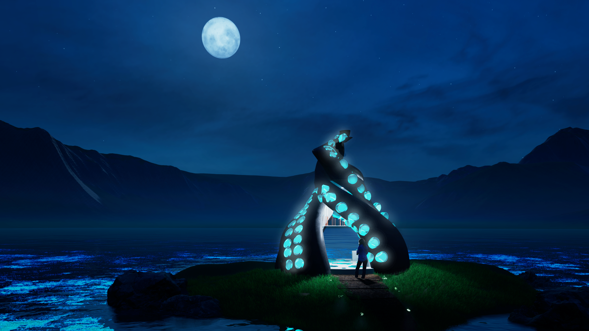
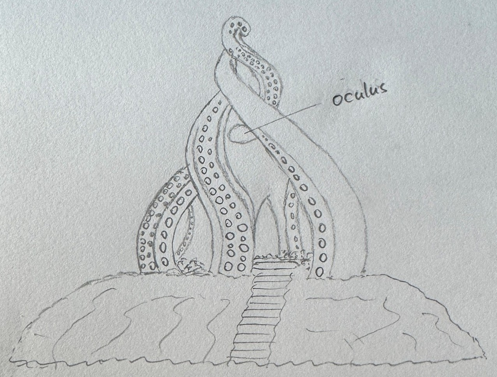
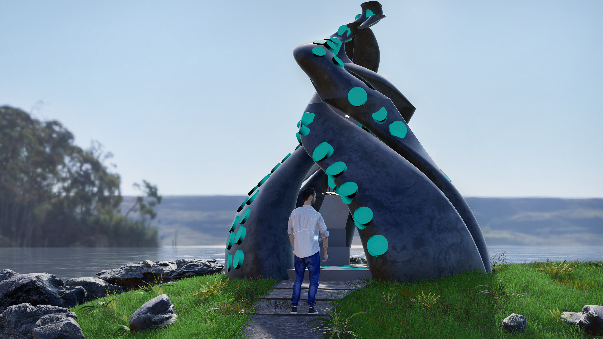
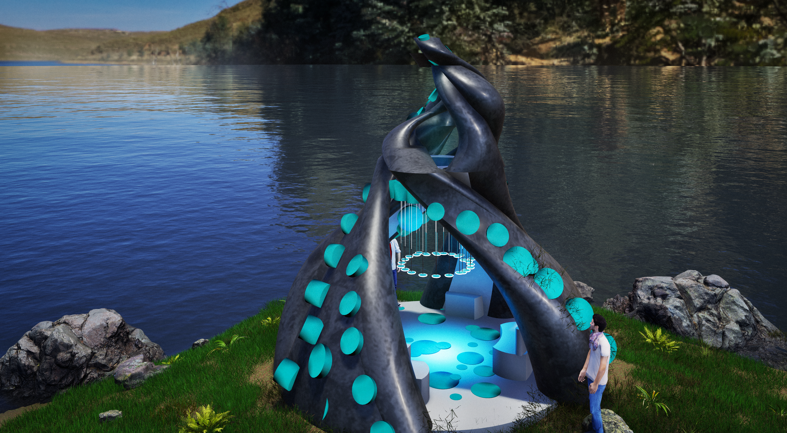
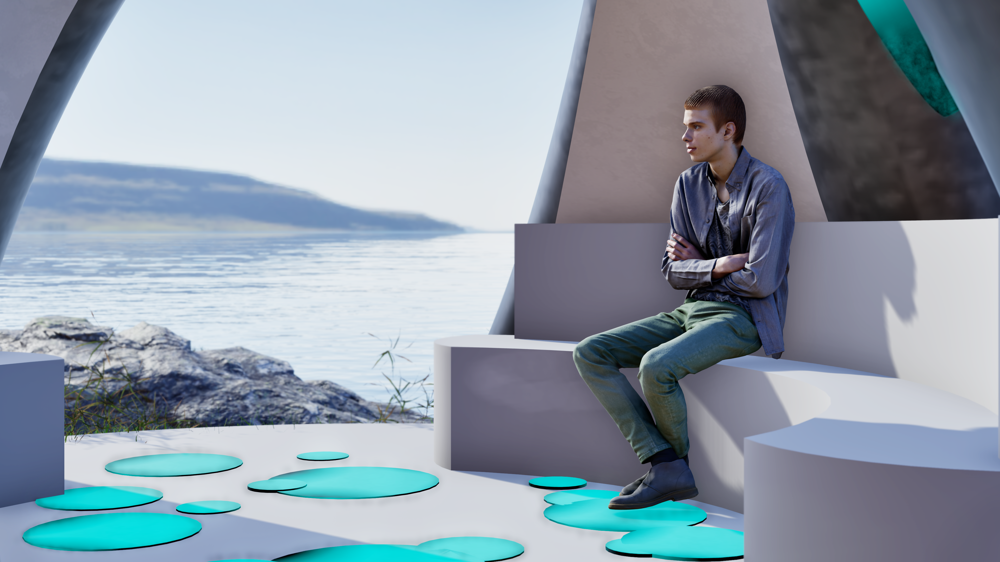
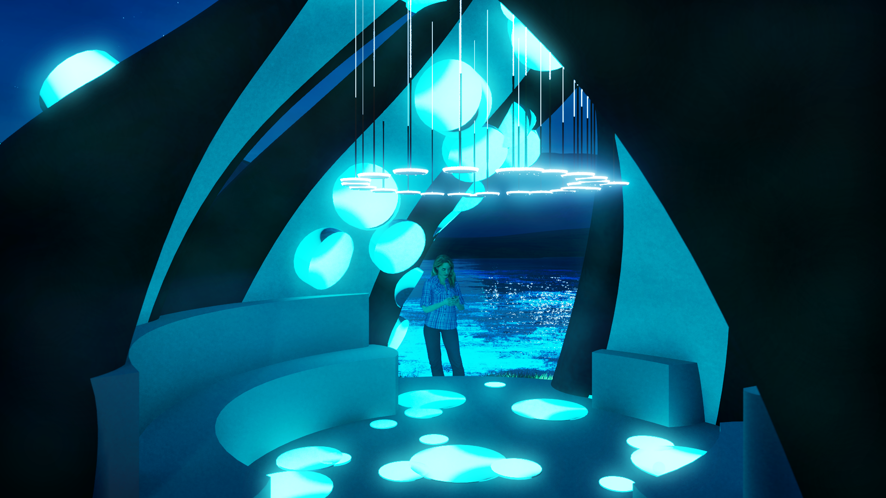
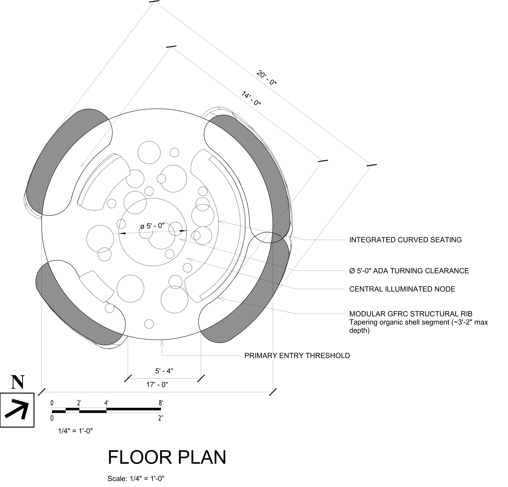
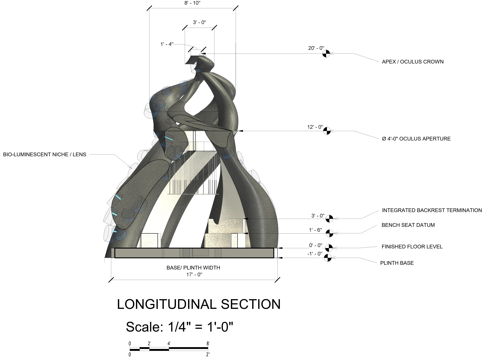
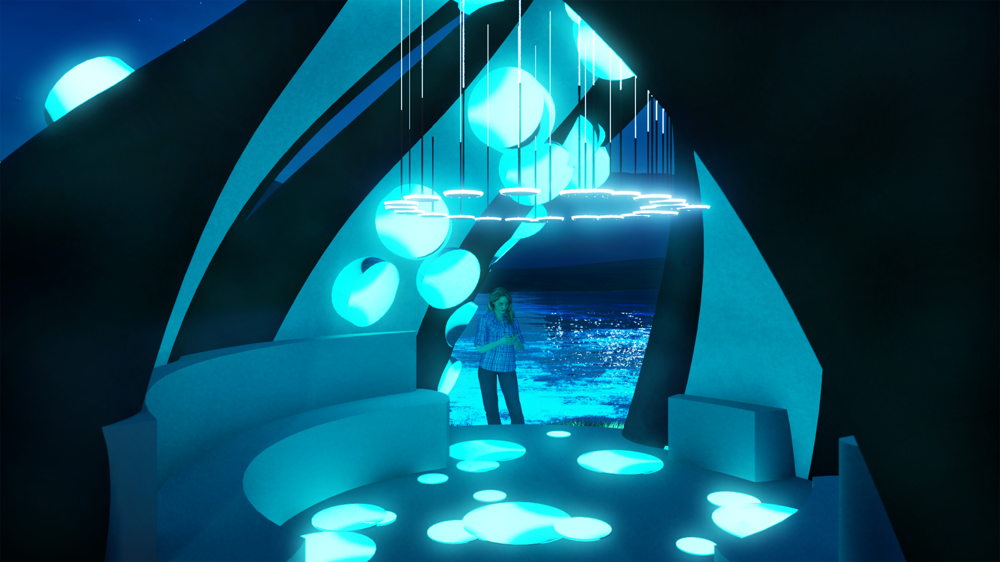

A sculptural sea-chamber rising from rock and water toward the sky
Submitted to IIDA TX/OK Student Excellence in Design — Commercial Category
Submitted to Architecture Masterprize 2026 — Student / Conceptual Architecture

Course: ARCH X482.1-029 — Design Studio I
Instructor: Samuel Mathau, AIA, APA
Role: Student Designer
Assignment: Architect's Folly Design (Problem #2)
Submitted to: IIDA TX/OK Student Excellence in Design — Commercial Category; Architecture Masterprize 2026 — Student / Conceptual Architecture
Precedent Architect: Smiljan Radić Clarke — 2026 Pritzker Laureate
Site: San Juan Islands, Washington
Tools: Autodesk Revit, Twinmotion, Adobe Photoshop, Hand Sketching
Tentacle Folly is a small atmospheric retreat on the San Juan Islands, Washington. The design began from a playful visual memory — a tentacle-shaped object noticed in Hotel Transylvania — and developed through the poetic method of Smiljan Radić. Layered with Alfred, Lord Tennyson's poem "The Kraken," the folly turns images of giant arms, hidden grottoes, and rising movement into four sculptural tentacle ribs wrapping a central pause chamber.
A narrow path leads visitors into a glowing bioluminescent interior with curved seating, a reflective floor, and an oculus that frames the sky. The dark basalt shell anchors the folly to the rock; the pale glowing interior becomes a quiet sea-chamber for reflection.
1
Image
2
Poem
3
Mass
4
Light
5
Path
6
Pause
The tentacle form began as freehand pencil studies — working out the four twisting ribs, the oculus, and the entry sequence. The sketch captures the essential gesture: arms rising from the island, converging at the crown.

Smiljan Radić Clarke is a Chilean architect known for poetic, atmospheric, site-specific work — the 2026 Pritzker Laureate. His designs create feelings of shelter, mystery, memory, and wonder rather than only solving a function. Each project answers its own site, story, material, and atmosphere.
I studied his House for the Poem of the Right Angle (Vilches, Chile, 2010–12) — a black concrete mass among oak trees with a cedar interior and branch ceiling, where the forest continues indoors. The house was built directly from a text: Le Corbusier's poem became the house's massing, not just its mood.
Radić gives me permission to think emotionally and poetically. A small structure can still feel powerful if it creates a strong atmosphere. I use the same process, not his forms.
The method, translated:
Radić: poem → shell-like house → skylights → hidden interior → landscape
Mine: image + Kraken → tentacle ribs → oculus → glowing chamber → island & water
Note: All student design work shown is my own original response to the study brief. The precedent architect's work is referenced for educational analysis.
Alfred, Lord Tennyson's poem provided the emotional and spatial atmosphere behind the form:
Below the thunders of the upper deep,
Far, far beneath in the abysmal sea,
His ancient, dreamless, uninvaded sleep
The Kraken sleepeth…
…In roaring he shall rise…
Three spatial ideas drawn from the poem:
The San Juan Islands sit in the cold, nutrient-rich Salish Sea — one of the best places on Earth to find the Giant Pacific Octopus, the largest octopus species alive. The very creature behind the tentacle form lives in these waters.
Approach sequence: Island edge → Stone path → Narrow entry → Glowing chamber

The dark basalt ribs read as if they grow from the island rock. Blue niches and a bioluminescent floor bring the surrounding water inside.
Approach → Compression → Release → Light → Pause
The whole folly is first seen across rock and water. A stone path slows arrival.
The path narrows to a 5'-4" threshold. Entry is deliberately compressed, heightening the release.
The visitor enters a pale 14'-0" circular chamber. Lateral compression shifts to vertical release.
The eye is pulled upward to the 4'-0" oculus and across the reflective floor toward the framed sea opening.
Integral curved seating gives the body a reason to stop while sky, water, shadow, and light continue to move.
Human-Scale Resolution: Step-free chamber · 5'-0" clear turning space · integral seating 1'-6" high × 2'-0" deep · sea-facing opening 6'-0" W × 8'-0" H · side openings 4'-0" W × 7'-0" H
Four modular GFRC structural ribs wrap a central circular chamber, creating openings and a curled skyline. The ribs twist upward like rising arms; each curves differently, so the form reads as organic rather than mechanical. Blue cast glass niches with concealed cyan LED run along the ribs as a recognizable tentacle-sucker pattern.

20' × 20'
Approved footprint
20'-0"
Height to apex
14'-0" ∅
Interior chamber
4'-0" ∅
Oculus aperture
5'-0" ∅
ADA turning clearance
17'-0"
Plinth base width
Inside, the space becomes lighter and more intimate: a pale shell-like interior, blue glowing niches, a suspended pendant cluster, a reflective floor, and built-in curved seating. The visitor sits, looks up through the oculus, and out through framed openings toward water and mountains.

In Radić's house, branches make the forest continue indoors. In my folly, the glowing blue floor becomes a continuation of the bioluminescent water around the San Juan Islands — the sea's light appears to enter the chamber, spread across the floor, and rise into the blue niches of the ribs.

The floor plan reveals the spatial sequence: from the primary entry threshold, the path leads into a circular chamber with integrated curved seating, a central illuminated node, and a 5'-0" ADA turning clearance. The four modular GFRC structural ribs define the chamber's perimeter.

Floor Plan — Scale: 1/4" = 1'-0"

Longitudinal Section — Scale: 1/4" = 1'-0"
| Code | Element | Material / Description |
|---|---|---|
| FF-01 | Integrated Curved Bench | Cast GFRC with smooth interior finish, integrated backrest termination, bench seat datum at 1'-6" |
| FF-02 | Suspended Pendant Cluster | Custom disc luminaires suspended from oculus crown, creating a floating light ring |
| FF-03 | Backlit Sea-Glass Niches | Blue cast glass with concealed cyan LED, set into organic openings along the GFRC ribs |
| FF-04 | Bioluminescent Floor Inlays | Resin bioluminescent inlays in organic disc shapes, embedded in polished concrete floor |
| FF-05 | Reflective Floor | Polished concrete with reflective finish, mirroring oculus light and pendant cluster |
| FF-06 | Stepped Entry Threshold | Cast GFRC steps transitioning from island grade to finished floor level |
Modular GFRC (glass fiber reinforced concrete) structural ribs — tapering organic shell segments (~3'-2" max depth). Dark basalt finish anchoring the folly to the rocky island.
Pale shell plaster — smooth, light surfaces make the chamber calm and intimate.
Blue cast glass with concealed cyan LED — backlit sea-glass niches suggest underwater light and bioluminescence.
Polished reflective concrete with resin bioluminescent inlays — mirrors the oculus and blue light, bringing the sea's glow indoors.
Light changes the architectural reading of the form rather than simply illuminating it.
The exterior stays heavy and dark. Inside, the oculus admits a single shaft that lands as a bright disc on the polished floor and migrates across it as the sun moves. The chamber is read by one moving mark rather than by even illumination.
As ambient light falls, interior surfaces and sea-glass niches begin to register through the openings. The chamber is still contained, but no longer visually sealed.
At night the reading reverses: apertures and niches become dominant while the shell recedes. The dark protective mass becomes a luminous sea chamber.

By day a moving disc of sun; by night, the mass itself becomes the lantern.
Ribs twist upward like rising tentacles.
Dark exterior vs. pale glowing interior.
Blue circular niches repeat along the ribs.
Every element relates to the sea concept.
Four ribs form a balanced circular whole.
Each rib curves differently — organic.
The folly has no conventional program. Its purpose is atmosphere and experience: to slow the visitor, hold a protected moment of reflection, and intensify the connection between water, sky, light, and material.
Tentacle Folly asks how little architecture is required to create a complete experience: four ribs, one chamber, one aperture, one horizon, and a place to pause.
The tentacle form rises upward from below the land and water toward the sky — which, for me, means growth and transformation.